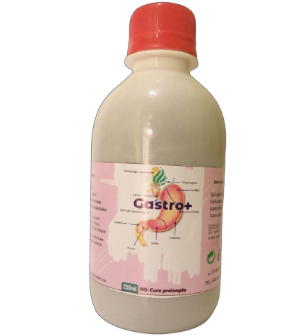

CAUSES DE LA DOULEUR ABDOMINALE :
Les douleurs abdominales sont fréquentes à tout âge et peuvent avoir de nombreuses causes. En effet, tous les organes abdominaux peuvent être à l'origine d'un mal de ventre. Parfois accompagnés de crampes, de brûlures, de gaz, ces maux de ventre peuvent véritablement avoir un impact sur le quotidien.
Les douleurs et crampes abdominales peuvent être localisées à différents niveaux de l’abdomen. Cependant, on utilise souvent les termes de « maux de ventre » ou « maux d’estomac.
LES CAUSES DES DOULEURS ABDOMINALES
Les causes des douleurs de l’abdomen sont très diverses, bien que majoritairement en lien avec les organes digestifs comme l’estomac, l’intestin ou le foie. Elles peuvent aussi résulter de troubles ou maladies gynécologiques, urinaires et même, dans certains cas, cardiaques ou pulmonaires. Il arrive aussi que ce soit la paroi abdominale en tant que telle qui soit douloureuse.
Parmi les causes les plus fréquentes des douleurs abdominales, on retrouve :
- Les troubles courants de la digestion : indigestion, constipation, gaz intestinaux
- Une intoxication alimentaire
- Les pathologies gastro-intestinales
- La maladie cœliaque
- Une allergie ou intolérance alimentaire
- Une inflammation du pancréas (pancréatite)
Si la douleur dure plus de deux jours et persiste, prenez rendez-vous dans notre cabinet ou commandez vos flacons GASTRO+ (100% naturel)...
𝗟𝗢𝗖𝗔𝗟𝗜𝗦𝗔𝗧𝗜𝗢𝗡 : DOUALA, Entrée Bepanda (5e rue) , face AUTO-ÉCOLE le CONTINENTAL .
📲 (+237) 674 956 175 / 658 005 554